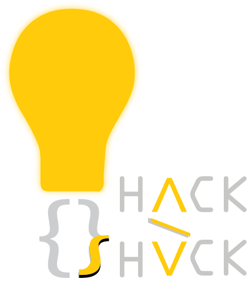
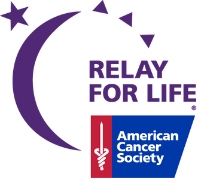
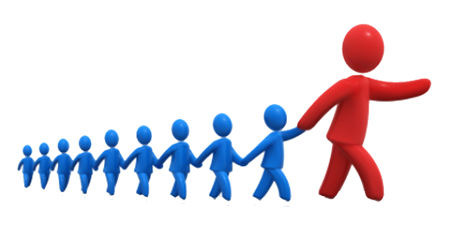
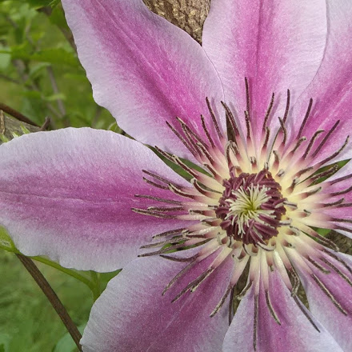

Hobbies and Clubs
Coding Club
Last year I was in Coding Club and I am very excited to be a part of it again. It is a great place to be with friends and it is an amazing environment. Help is always provided if needed, and it is very wonderful all around. This year I hope to be more involved. Maybe I can even teach HTML! The Coding Club page can be found here.
Relay for Life
Last year I joined Relay for Life, which is a club where money is raised for cancer victims and research. Last year I was just a member on a team, but as of this year I want to be a captain. I am excited to run things myself and be in charge, though I expect it to be difficult. The Relay for Life page for AIT and UCTech can be found here and the donation page can be found here.
Robotics
As of this year, I have joined the UCVTS Robotics Club. So far it is a fun way to hang out with my current friends, reconnect with old ones, and make new friends! I am very excited for what will hopefully be a fun year in Robotics Club! The Robotics Club page can be found here.
Student Leadership Council
The Student Leadership Council is a group of students in AIT who have shown leadership either by being elected as a Class Officer, by being elected in Student Government, or by earning Student of the Month. I am in it through Student of the Month, and it is a new program as of the 2017-2018 school year, and it is to help the students communicate with Ms. Gianella and the other people in charge of AIT.

Reading
Reading is my main hobby! I really love it, and it helps me relax after stressful days. I don't know what I would do without it!
Photography
Photography is another one of my hobbies! I usually take pictures of plants, though sometimes I take pictures of other things too. The picture to the right is a picture I took myself, and I can't wait for the fall leaves to show so I can take pictures of them too.